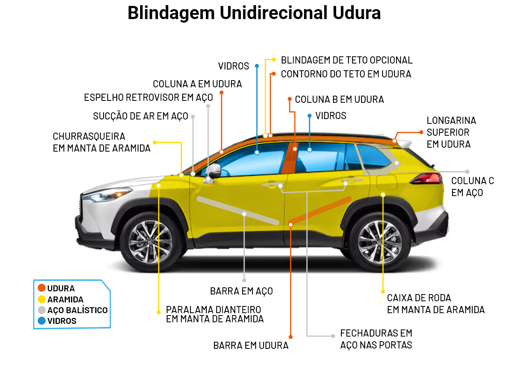

Características da Blindagem Unidirecional Udura
- Proteção Direcionada: Como outras blindagens unidirecionais, a Udura é projetada para proteger contra ataques vindos de uma direção específica, como a frente ou laterais do veículo.
- Materiais de Alta Dureza: Utiliza materiais extremamente duros e resistentes, como aço balístico de alta dureza, compósitos cerâmicos e outros materiais avançados que proporcionam uma resistência superior a impactos balísticos.
- Peso e Desempenho: Devido ao uso de materiais de alta dureza, essa blindagem pode ser mais pesada do que outras formas de blindagem unidirecional, mas oferece um nível de proteção balística significativamente mais alto.
Vantagens da Blindagem Udura
- Alta Resistência Balística: Fornece excelente proteção contra projéteis de alta velocidade e armas de alto calibre devido ao uso de materiais de alta dureza.
- Proteção Direcionada: Focaliza a proteção em áreas críticas, otimizando a utilização de materiais e oferecendo proteção robusta onde é mais necessário.
- Durabilidade: Os materiais utilizados são extremamente duráveis e resistentes a impactos repetidos, oferecendo uma longa vida útil e manutenção reduzida.

×